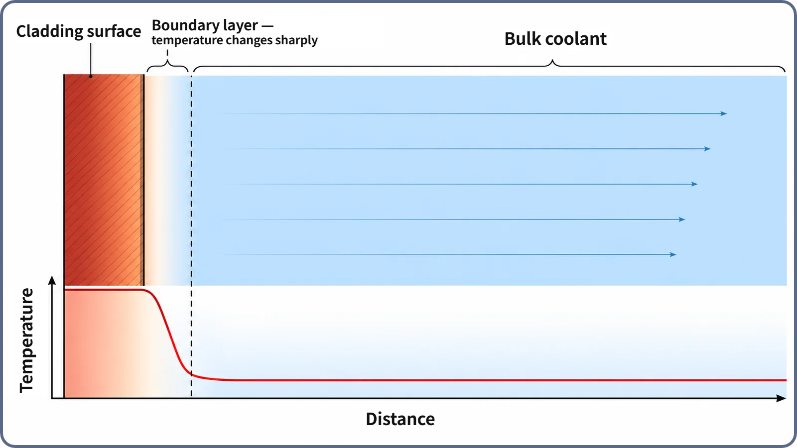

Heat Transfer & Thermal Hydraulics · 133
What Is That Sticker on the Window Really Measuring? — The Heat Transfer Coefficient Explained
A window's energy label grades one boundary. In a reactor, h grades the last step of heat's journey: from cladding surface into the coolant.
The heat transfer coefficient, h, tells how well the boundary between a solid surface and the fluid flowing past it passes heat, per unit area and per unit temperature difference. Unlike thermal conductivity, a fixed property of a material, h depends on the situation at the boundary: how fast the fluid flows, what fluid it is, the surface condition and whether the flow is laminar or turbulent.
Even a boundary has a grade
The energy-efficiency sticker on a new window squeezes into one grade how well that window, or more precisely the boundary where glass meets outside air, passes or blocks heat. The grade is not about glass alone: frame design, the air or argon between panes and surface coatings all change it.
Nuclear fuel has a similar boundary. Fission heat travels through the fuel pellet, across the gas gap and through the cladding, the thin metal tube around the fuel, dropping in temperature at each layer. The last step, from the cladding's outer surface into the flowing coolant, happens by convection rather than conduction, and the number that says how well this boundary hands heat over is the heat transfer coefficient, h, in W/(m²·K).
Newton's law of cooling
q″ = h × (Tsurface − Tfluid), or rearranged, h = q″ ÷ (Tsurface − Tfluid)
| Symbol | Meaning | Unit |
|---|---|---|
| q″ | Heat moving from surface to fluid per unit area (heat flux) | W/m² |
| h | Heat transfer coefficient | W/(m²·K) |
| Tsurface | Solid surface temperature | — |
| Tfluid | Average (bulk) fluid temperature a little away from the surface | — |
For the same heat flux, a boundary with a large h passes all of it with only a small surface-to-fluid temperature difference. A small h needs a much larger difference, so the surface runs hotter. A well-rated window is designed to pass heat poorly; a reactor wants the opposite, handing heat to the coolant readily to keep the surface cool, so a larger h is often the better side.
What makes h go up or down?
- Flow speed. Fast flow keeps washing heated fluid away from the surface, so h generally increases; sluggish flow gives a smaller h.
- Fluid type. Liquids such as water generally have a much larger h than gases such as air. Actual values vary widely with pressure, temperature and velocity.
- Surface condition. Roughness, oxide films or deposits can change h.
- Flow pattern. Turbulent flow usually mixes heat away more vigorously than orderly laminar flow, giving a larger h. Reactor coolant channels are generally designed and operated in turbulent conditions.
Real designs calculate h with empirical formulas built from flow velocity and fluid properties.
Don't confuse h with thermal conductivity k
Thermal conductivity (k) is a property of the material: how well heat passes through its inside. For a given material it barely changes with flow. The heat transfer coefficient (h) describes the boundary between a surface and a flowing fluid; change the flow speed and h itself changes. k is a property of the material; h is a property of the situation. The whole trip from pellet center to coolant is a relay: conduction legs through pellet, gas gap and cladding (set by k), then a final convection leg into the coolant (set by h).
The thin zone right at the surface
Fluid flowing past a surface slows sharply in a very thin layer right against it and regains full speed farther away. Temperature behaves the same way: in this narrow thermal boundary layer, most of the change from surface temperature to bulk fluid temperature takes place, while the bulk flow beyond stays fairly uniform.

Inside that layer, heat moves by conduction through the fluid. The thinner the layer, meaning the steeper the temperature gradient at the surface, the larger h. Faster flow thins the layer, which is why it raises h. The exact quantitative link depends on the flow and geometry.
Why h matters in plant design
Only by adding this last convective resistance to the conduction resistances of the gas gap and cladding can the full temperature drop from fuel center to coolant be explained. The larger h stays, the smaller the temperature difference needed to move the same heat, so the cladding surface doesn't get too hot and thermal margin is easier to secure. Under certain conditions h can suddenly get much worse, for instance when a vapor film forms on the surface; that is a separate topic.
A larger h is not automatically better, either: raising it by increasing flow takes more pump power, so it has to be balanced against other design factors.
Key takeaways
- The heat transfer coefficient h tells how well the boundary between a solid surface and a flowing fluid passes heat (W/(m²·K)).
- By Newton's law of cooling, a larger h means a smaller temperature difference to pass the same heat.
- h depends on flow speed, fluid type, surface condition and flow pattern; unlike the material property k it describes a situation, and a thinner boundary layer means a larger h.